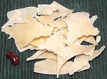
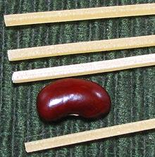

SAFARI
Users
- Tools for Making Pasta
- Making Fresh Pasta
- Storing Fresh Pasta - dried, refrigerated or frozen.
- Cooking Fresh Pasta
- Fresh Pasta Shapes
Tools for Making Fresh Pasta
The essential tools are illustrated in the photo at the top of this page.
- A sturdy working surface. In this case a 2 foot square sheet of 3/4 inch plywood, the surface rubbed with mineral oil. That's about the minimum size that will be usable.
- A rolling pin. The type shown is an Italian pasta pin. It is straight, 1.6 inches diameter with no taper and a working length of 18.5 inches. This is about the minimum useful length. The big pasta mamas in Italy use pins over 3 feet long. The knobs on the ends serve no purpose and could be cut off. The tapered French style will work fine if you will be using a pasta machine, but not for hand rolling - the reason is stretching, explained below. The fat ones with handles at the ends may work for pie crust, but not for pasta.
- A dough scraper, needed for keeping the work surface clear of dough fragments and the like. It can also serve for cutting pasta. Mine is also ruled in inches and centimeters which is quite convenient.
- Various cutters, straight and wavy.
- A pastry brush (a natural bristle paint brush about 1-1/4 inches wide) is fine.
- A drying rack for long pasta. My rack (pictured below) is a length of Cat-5e network cable stretched between two hooks. Actually, the data rate for this application is very low, so Cat-3 cable would work fine.
There is also a device that may not be essential, but you will most certainly want one - the Pasta Machine. Rolling out pasta with a rolling pin is certainly doable, and will serve to build immensely strong hands, arms and shoulders, but it is rather a lot of work and takes a lot of time. These machines can be had at quite reasonable prices. The one in the photo was about 2012 US $34.
The front section with the crank in it rolls the dough progressively
thinner, thinner than you can do with a rolling pin, and fast! The
removable upper section is a dual cutting unit for spaghetti and
fettucini. Other cutter units are available, but none are essential.
Of course, you still need the rolling pin to get things started.
This Norpro Ravioli mold is very popular, but I'm not entirely thrilled with it. It does get quite a lot of filling in each cell, but the cells tend to have a lot of air in them, and there's no way to squeeze it out. The ravioli are also quite prone to damage or bursting, and you still often have to cut them apart with the wavy cutter.
The traditional method is to cut ribbons twice as long as wide. Fill
and fold over. I usually cut the ribbons with a straight cutter, then
use the wavy blade to trim the three sealed edges real nice.
Making Fresh Pasta
There are two basic recipes for fresh pasta in Italy. The first is used in most of Italy, the second in Emilia-Romagna. The recipe with oil is considered a little easier to work with. Each of these will make about 2 pounds of dough.
|
4 cups
5 1/4 t 1 T |
Flour
Eggs Ext.Large Salt Oil |
4 cups
4 |
Flour
Eggs, Jumbo |
|
|
|
Storing Fresh Pasta
Fresh pasta can be dried, refrigerated or frozen. If dried it will be very fragile compared to regular dried pasta. Refrigerated, pasta will last for about 5 days, frozen for two months or so.
To prepare for refrigeration or freezing, pasta needs to be at least "flash cooked" to keep it from sticking together - or you will have a horrible mess. Bring a lot of water to a rolling boil. Drop the pasta in for just 20 seconds, then scoop out and plunge into cold water to stop the cooking. Drain well, bag with all air squeezed out, and store. If frozen, the pieces will freeze to each other, but will separate as soon as plunged into boiling water.
Pasta to be baked, such as lasagna or cannelloni, can be cooked 3 minutes, then drain well and store in a container with each piece separated from the others with waxed paper. refrigerate or freeze.
OK, those are the official methods, but that's not how I freeze pasta. I lay out a sheet of thin plastic on a baking sheet that fits in the freezer compartment, then place pasta pieces on it in a single layer. There's so little water in the pasta it freezes up sufficient for bagging within 20 minutes or so. This way all the pasta pieces are completely separate and you can remove just as many as you wish.
Cooking Fresh Pasta
The general rules are exactly as for dried pasta (see Cooking Pasta) but the timing will be much different
If the fresh pasta has had only 15 to 20 minutes of air drying, and is 0.020 inch thick or less, it will probably be done within a minute of the water coming back to a boil.
If it is thicker, or stuffed, or has had more drying time, it can take quite a bit longer. Try samples while cooking just as with regular pasta.
Fresh and Stuffed Pasta Shapes
Numbers:
The numbers given here are Clovegarden numbers and have no relation to any Italian designations.Agnolotti
- [193]Stuffed pasta squares with rippled edges on three sides and a fold on the fourth.
Anolini
- [314]These are an easy to make fresh stuffed pasta, just a circle punched out with rippled edges folded over.
Cannelloni
- [321]In North America, Cannelloni are most often dried pasta tubes, cooked, stuffed and baked with sauce. In Italy they are often made fresh, and rather than a stuffed tube they are often made up like a jelly roll. The photo specimens, rolled up with a meat filling spread on them, were 5.25 inches long. The original dimensions were 4.0 x 5.0 inches, but the 4.0 inch dimension became 5.25 inches after cooking. About 2 Tablespoons of filling was spread on each one before rolling.
Cappelletti
- [311; Alpine Hats]
These are made from 2 to 2-1/2 inch squares of fresh pasta folded
around stuffing into a triangle. The apex of the triangle is then
folded down over the flat side and the points brought together across
the stuffed side. They are very much like Tortellini, but from a square
rather than a circle. The photo specimens were made from 2-1/2 inch
squares (because that's half the web width of my pasta machine) and
the finished product is about 1.0 inch diameter and 0.75 inch high.
These are generally stuffed with meat or cheese, and may be served
with the broth they are cooked in or with various sauces.
Egg Noodles
In Italy, egg noodles are generally fresh noodles, especially since it's against the law to sell dried pasta made from anything but durum wheat and water.
Fettuccini
- [308; Lasagnette, Fettucce ]
This is one of the most common ribbon shapes used with fresh pasta, in
fact most pasta machines come with a cutter roll that produces this
size, about 0.3 inch wide by however thick you make it. Do Not
let it sit as in the photo for more than 30 seconds or you will never
be able to get it apart.
Lasagna
- [318]Lasagna has been made fresh since the time of Ancient Greece, and was quite popular in Rome. It was used in layered dishes, but exact details of composition. making and cooking are unknown. It may have been quite unlike Lasagna made with pasta. The photo specimens are about 2-1/2 inches wide, 10 inches long and 0.020 inch thick. Commercial dried lasagna is commonly 2 inches wide, 10 inches long and up to 0.048 inch thick. Fresh is made from less than 2 inches up to 4 inches wide and up to 0.032 inch thick as desired by the cook.
Lingue de Suocera
- [121; Mother-in-law tongues]
This is a multicolor pasta from Puglia. It is fairly wide, has
sharp saw tooth edges and it is twisted. Dried, it is available
commercially, at an extremely high price, often over US $20 per pound.
The photo fragment is ©
Foodiva's Kitchen where Maya provides complete instructions on how
to make this at home - if you dare.
Maltagliati
- [317] Meaning "poorly cut", this name is used for various pasta scraps or cuts that resemble them. Commercially, they may be elongated diamonds, or very short tubes cut diagonally. Italian chefs needing to serve consistent dishes named "maltagliati" may take a strip of fresh pasta about the size of a lasagna and cut narrow triangles from the end, alternating left and right.
Manicotti
- [062] In North America these are usually dried, large ridged tubes which are
almost soft and stuffed with ricotta cheese and/or spinach or such and
then baked with sauce over. In Italy "Manicotti" are more commonly
made by wrapping stuffing in fresh crepes, or less commonly in squares
of fresh pasta.
In North America these are usually dried, large ridged tubes which are
almost soft and stuffed with ricotta cheese and/or spinach or such and
then baked with sauce over. In Italy "Manicotti" are more commonly
made by wrapping stuffing in fresh crepes, or less commonly in squares
of fresh pasta.
Orecchiette
- [032 (bronze die); Orecchiette Pugliesi, Little Ears of Puglia]
A specialty of the "Heel of Italy", this pasta varies quite a bit in
shape depending on how it's made. Ideally, they should be hand made,
pressed into shape with your thumb, but commercially they are machine
made dried pasta shaped to resemble the hand made product. Generally
they are a little less than 1 inch across.
Pansotti
- [313]This is a fresh filled pasta made from a 2 inch to 2-1/2 inch square with wavy edges. The squares can best be cut out with a wavy edged roller. Once the filling is placed, it is folded into a triangle.
Ravioletti
- [319]Ravioletti is like ravioli but smaller, just about any size smaller you like. The photo specimens are about 1.45 inches square. These are often cooked in broth and served with the broth they are cooked in, or they may be served with various sauces.
Ravioli
- [197]These ravioli were made using the Norpro ravioli mold pictured near the top of this page. They are about 1.84 inches square, and since most ravioli making devices produce squares about this same size I'm considering the "standard" size for ravioli. These may be stuffed with meat, cheese or vegetables and are served with various sauces.
Ravioloni
- [198]These are just like ravioli except bigger. The photo specimens were about 2.4 inches square, but it varies with the width I get out of my pasta machine. These may be stuffed with meat or cheese and are served with various sauces.
Spaghetti / Spaghettini
- [309]
Most pasta making machines come with a "spaghetti" cutting roller, but
it makes square spaghetti, not round (cutters that will make it almost
round are available at extra cost). My machines cutter makes it quite
a bit finer than regular spaghetti, more like spaghettini. Do Not
let it sit as in the photo for more than 30 seconds or you will never
be able to get it apart.
Spaghetti alla Chitarra
> - [037]
This pasta resembles regular spaghetti and is about the same size but
square in cross section. Traditionally it is cut from rolled
out dough by doing a final roll across a wooden box, the top of
which is tightly strung with wires - the Guitar / Chitarra. The photo
specimens are dried, as I didn't have time to build a Chitarra yet, and
were 0.080 inch square. Many pasta machines make spaghetti in this
form, but usually smaller.
Tagliatelle
- [307; Fettuccini]This is a very important flat ribbon pasta. For fresh pasta there is no standard, so it can be anywhere between 0.15 and 0.45 inch wide and however thick you make it. Tagliatelle is most often served with substantial meat sauces. Do Not let it sit as in the photo for more than 30 seconds or you will never be able to get it apart.
Tortelli
- See Anolini.Tortellini
- [312]These are pasta circles, folded over some stuffing into a semicircle, then the peak of the semicircle is turned down over the flat side and the points are brought together around the stuffed side to form a circle. They are often cooked in broth and served with the broth they are cooked in, but they may also be served with various sauces. A light tomato sauce works well with these. The photo specimens were made from 2.75 inch circles, about the smallest size my manly fingers can handle - the ladies may be able to make them from smaller circles. The finished product is about 1.0 inch diameter and 0.75 inch high.
Tortelloni
- [113]Stuffed pasta - a larger version of Tortellini. Available fresh or frozen but too big to dry commercially so only made fresh.